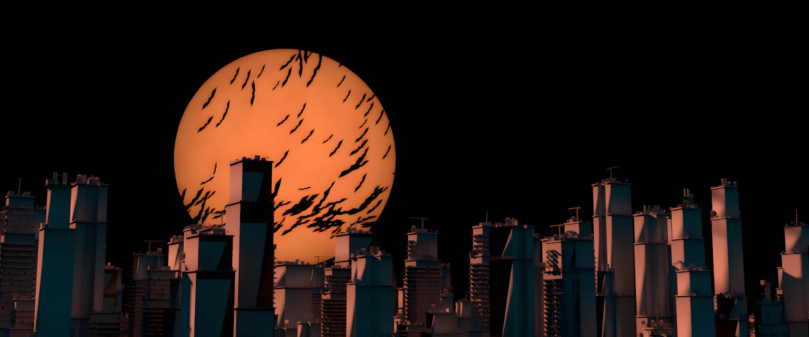
Процедурная массовка
Здания из примитивов, разбивка на районы, проверка масштаба и камер прямо во вьюпорте. Композиция решается здесь — детали не спасут плохой силуэт.
- зонирование кварталов по высоте
- камера и объектив — до деталей
- первые прогоны в Karma по блокауту
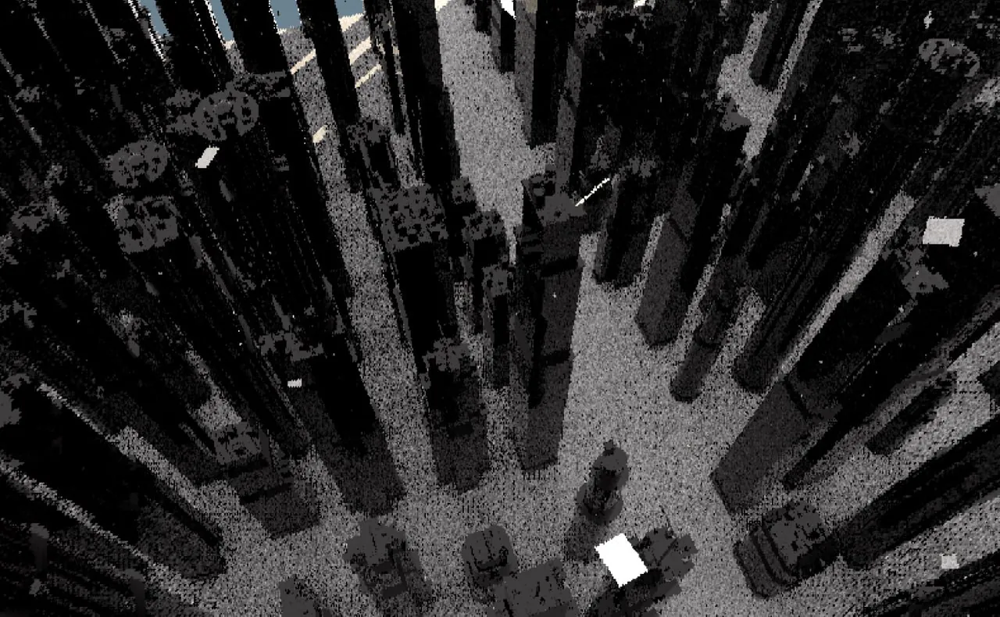
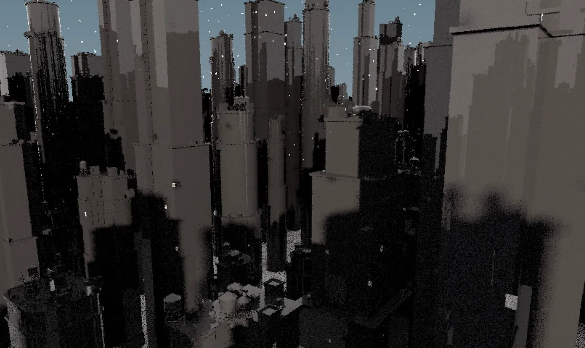
12 зданий, которые выглядят как тысяча
12 прототипов по 4 уровня детализации: этажи, окна, крыши, баки, антенны. Город собран инстансами и помещается в память обычного ПК: у камеры — полные модели, вдали — упрощённые.
- 48 кэшей: 12 прототипов × L0–L3
- PBR: бетон, кирпич, ржавый металл
- отдельный лукдев героического здания
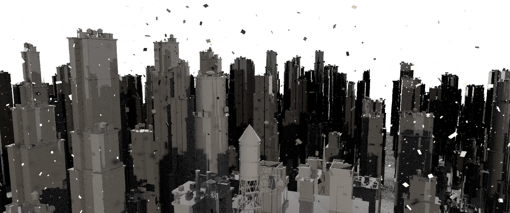
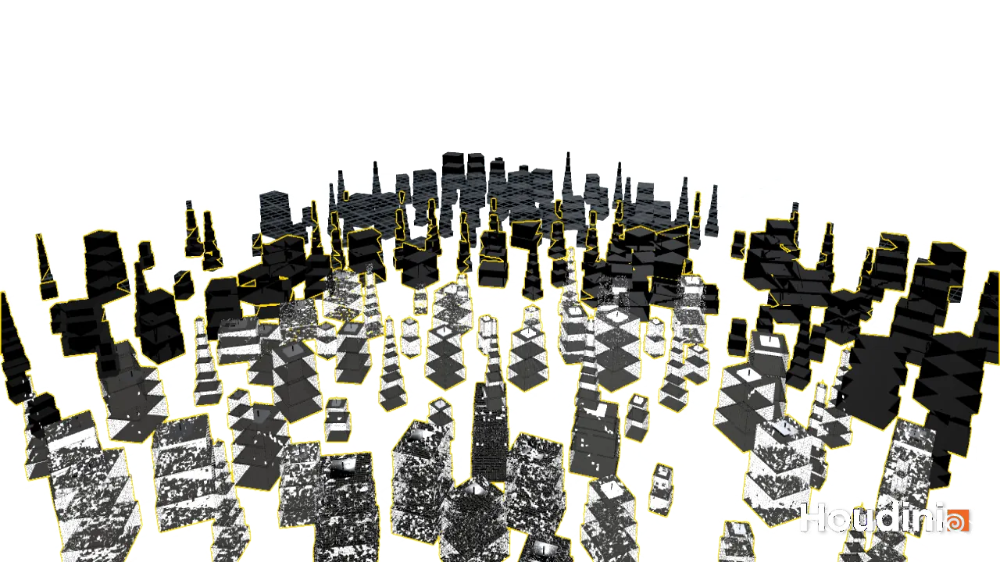
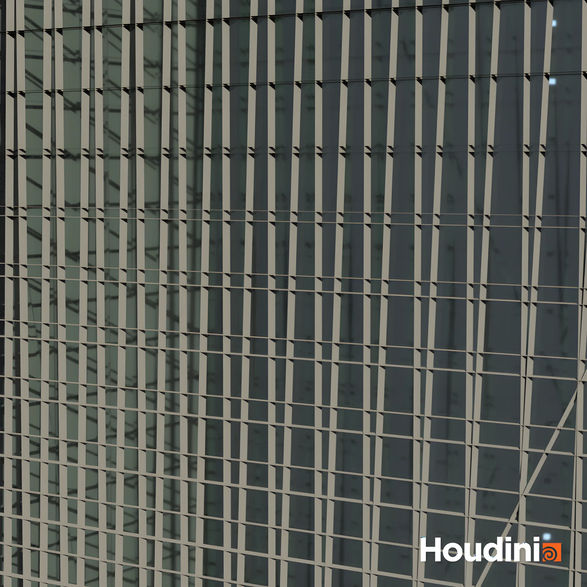
Монумент ОАО посреди города
Стрелка ОАО стоит в центре как памятник: отдельная лепка, бетонный шейдер, свой свет. На крышах — билборды ОАО, .solutions и «Красивых людей». Город становится декорацией бренда.
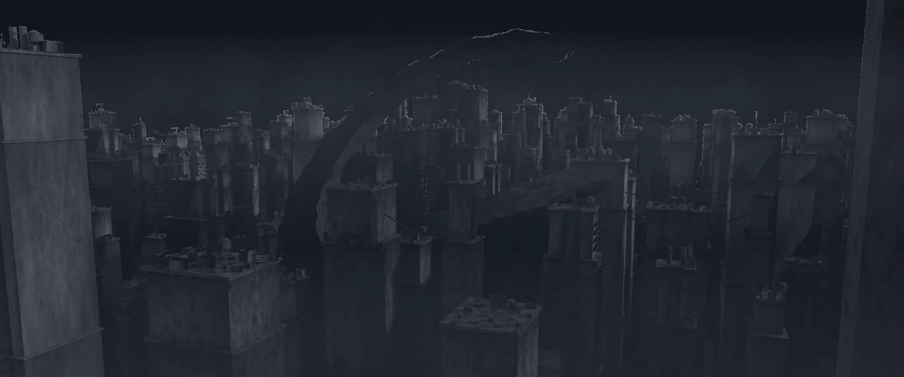
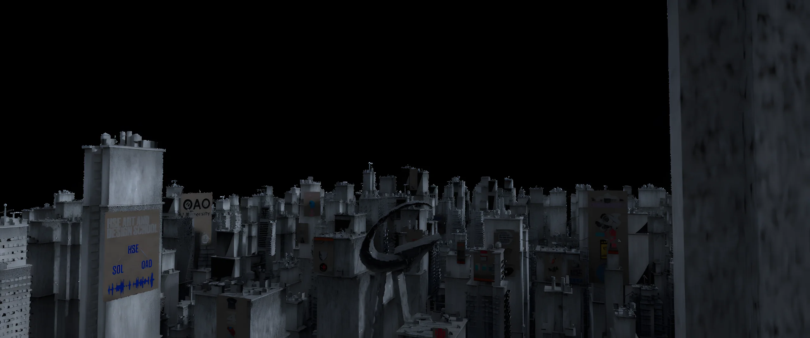
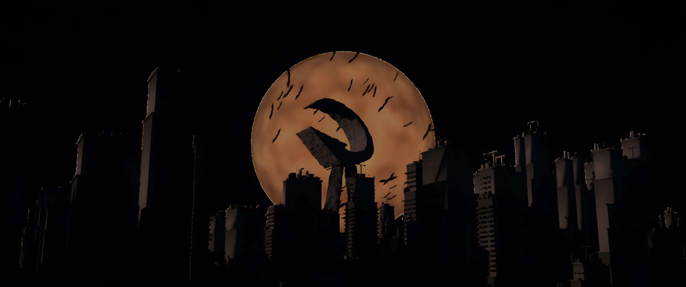
Один источник света — огромная луна
Луна — главный и почти единственный ключ: тёплый контровой, холодный рим по силуэтам, без фронтальной заливки. Небо — параллакс облаков карточками, стая мышей пересекает диск.
- от глины к шейдеру — тяни ползунок
- стая на частицах, у каждой мыши своя фаза взмаха
- город уходит в силуэт
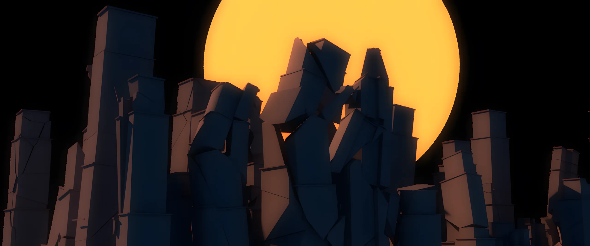
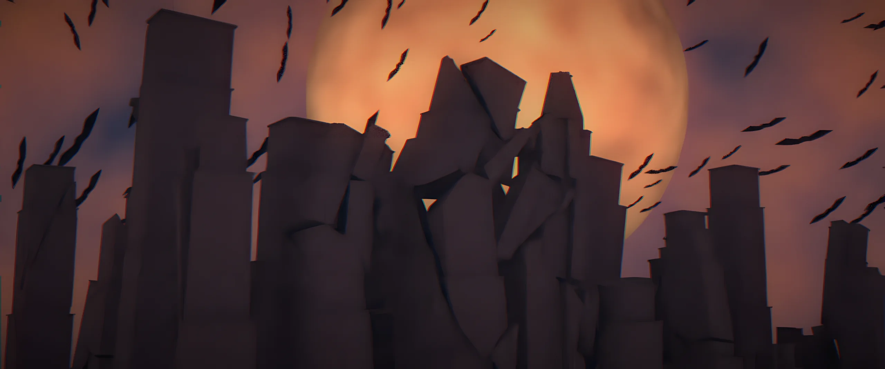
глинашейдер + небо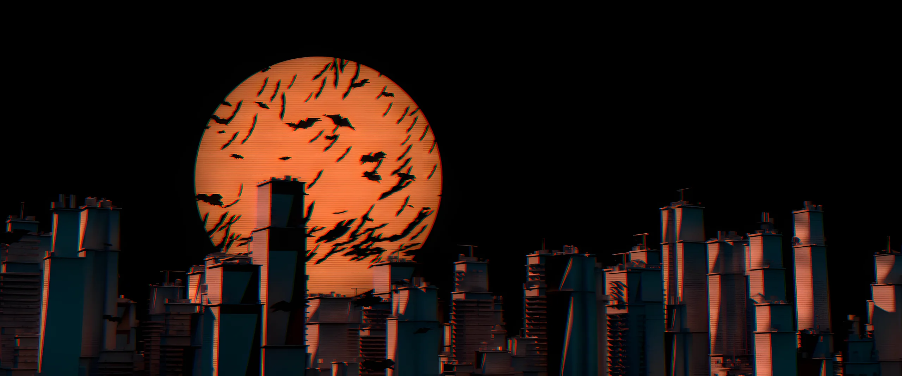
финал · мышиFLIP-цунами на город
Волна посчитана во FLIP в отдельной лёгкой сцене и подключена кэшем, поверх — мелкая рябь из ocean spectrum. Пена и брызги — отдельными слоями. Размер волн проверял по normal-проходу: свет в beauty обманывает.
- сетка воды ~1,5 млн точек
- отражение и преломление, IOR 1.33
- пена и брызги — свои материалы и проходы
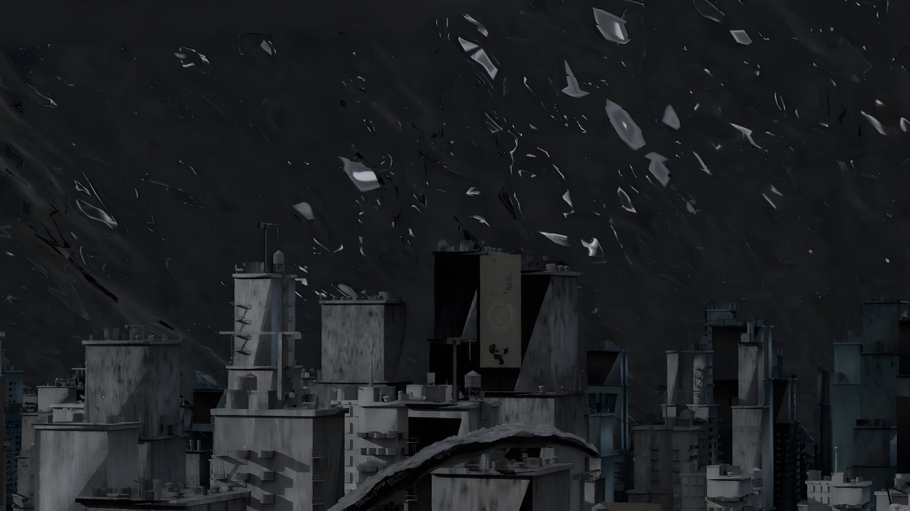
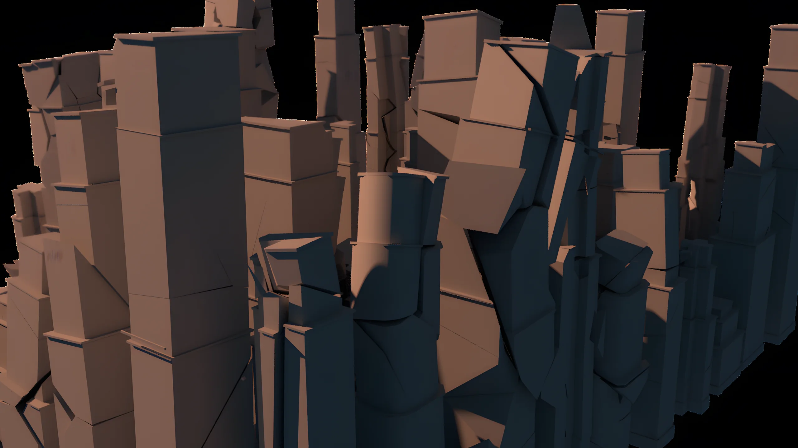
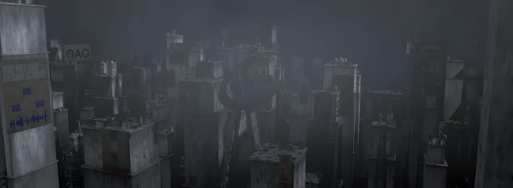
Ломается только то, что в кадре
Здания разбиты Вороным заранее, связи рвутся по фронту волны. Физику считают только ближние башни, дальние — прокси. Огонь — лёгкие слои, а не тяжёлый пиро на весь город.
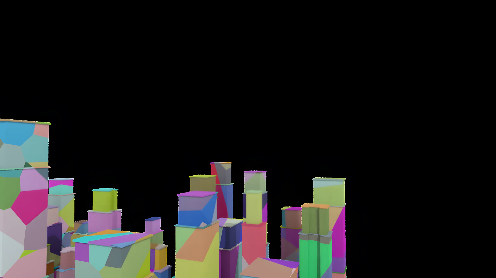
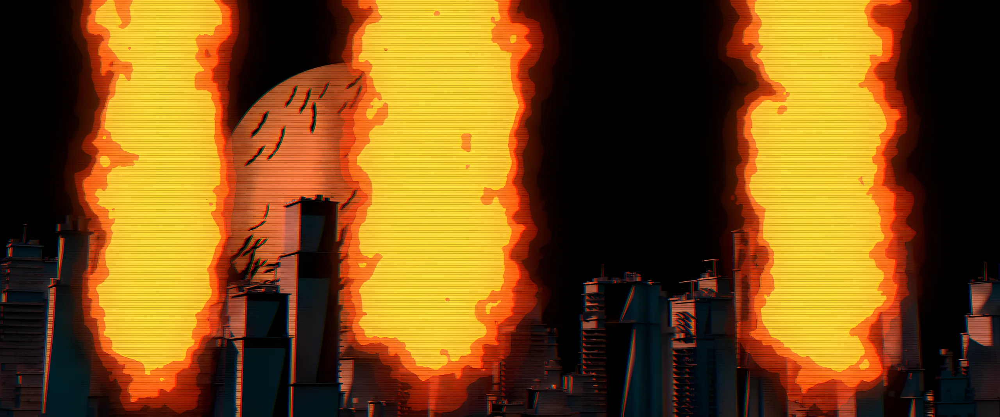
Каждый слой — свой проход
Город, луна, волна и брызги рендерятся отдельно: beauty, reflect, refract, normal, depth. Финальный вид — grim-VHS: зерно, развал каналов, лёгкий распад кассеты. Это и есть «система портится» из лора I.I.E.
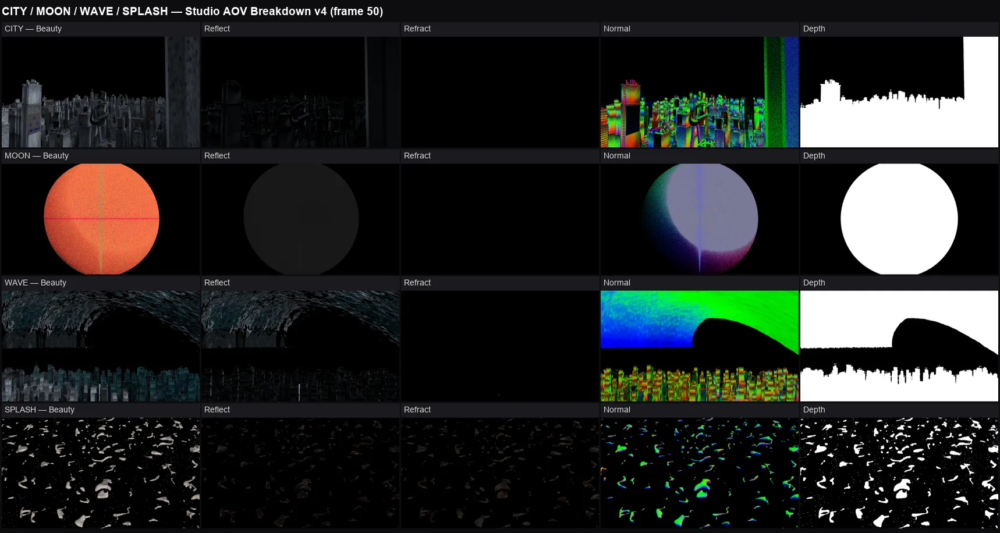
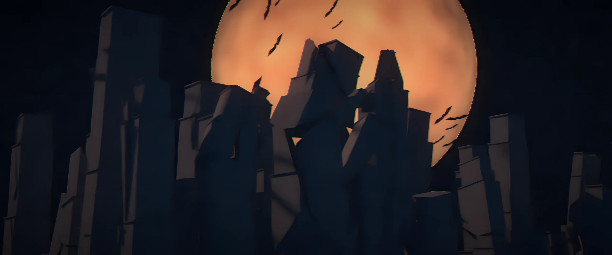
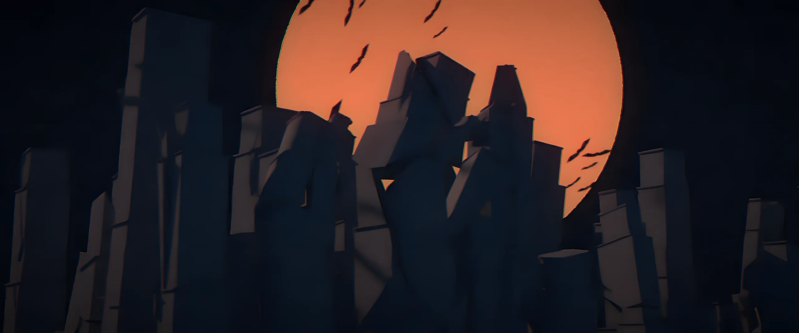
Большая сцена на обычном железе
16 ГБ — меньше, чем просит FLIP такого масштаба. Каждый слой считается в своей лёгкой сцене и подключается кэшем. Главная сцена весит 19 ГБ — её не открываешь рядом с симуляцией.
Кадры через husk из командной строки, многослойный EXR, проходы вытаскиваются отдельно. Интерфейс не падает, рендер идёт параллельно.
Каждая веха — отдельный снапшот сцены, откат за минуту. Записи о каждой сессии: что сделано, что сломалось, почему.
Вода выходила белой. AOV показал, что дело в альбедо, а не в отражении. Чинится за минуту, если смотреть в проходы, а не на beauty.